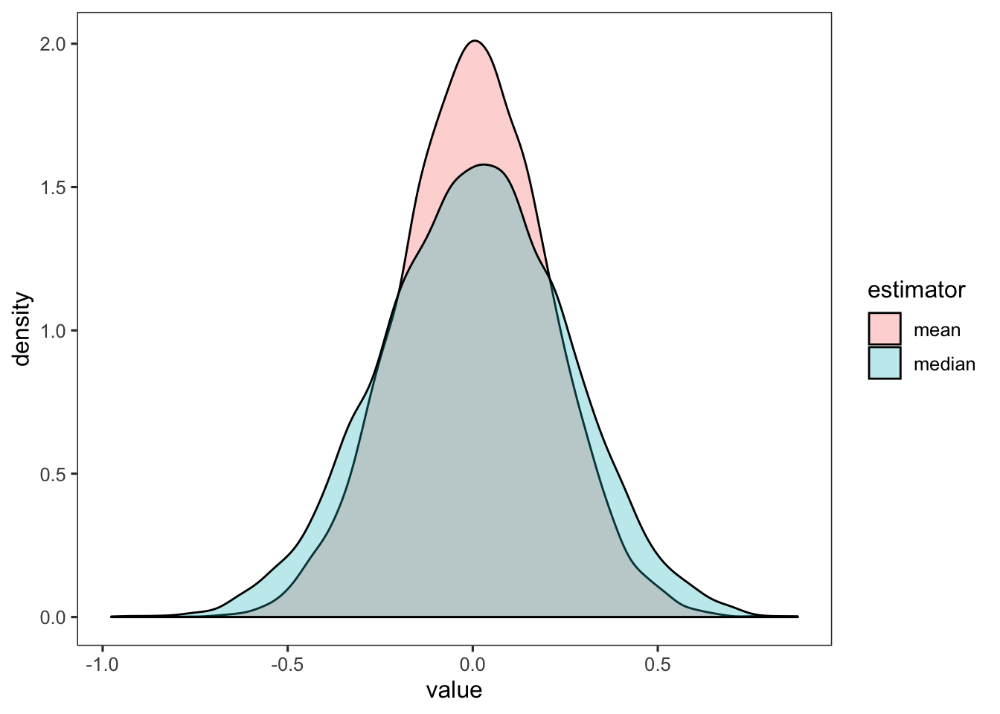

Chapter 6 Properties of point estimators
Estimator (\(\hat{\theta}\)): a function that can be applied to data to produce estimates of a true quantity
Estimate (\(\theta\)): the value of a quantity returned by an estimator applied to data (e.g., a sample mean, a parameter of a probability distribution, a regression coefficient)
Estimand (\(\theta\)): the quantity we are trying to estimate
Before we see the data, they can be represented as a random variable, \(D\). After we see the data, they are no longer random, and represented by \(d\).
If we apply an estimator to \(D\), the result is \(\hat{\theta}(D)\), which can vary from one dataset to the next. The distribution of an estimator is sometimes called the sampling distribution. The sample size of \(D\) will affect the estimate, and we use \(n\) to denote the sample size in the expression, \(\hat{\theta}_n(D)\).
In the first example, we apply the following estimator to \(n\) i.i.d. random variables \(X_i\), which are normally distributed with a mean \(\theta\) and variance of 1 (\(X_i \sim N(\theta, 1)\)):
\[ \begin{aligned} \hat{\theta}_n(D) = \frac{1}{n} \sum_{i = 1}^n X_i \\ \end{aligned} \]
That is, we would like to estimate the mean of our random variables, \(X_i\). We can do this in R, for 25 random variables that have a mean of 0 and a variance of 1:
## [1] -0.18836266.1 Bias
The bias of an estimator is the difference between the true value of the quantity we’re interested in (e.g., \(\theta\)), and the expectation of our estimator (\(E[\hat{\theta}_n(D)]\)). That is, our estimator is unbiased when it does not consistently over- or under- estimate the expectation; that is to say, it is accurate. Formally, the bias is:
\[ \begin{aligned} \text{B}(\hat{\theta}_n) = E[\hat{\theta}_n(D)] - \theta \\ \end{aligned} \]
We prefer estimators whose bias is 0 (i.e., unbiased).
6.1.1 Exercise set 6-1
The bias of the sample mean for \(X_i \sim N(\theta, 1)\) is 0. See handwritten notes.
Examining estimators for a normal distribution:
## num [1:10000, 1:25] 0.435 -1.023 -1.746 1.36 -0.642 ...## Sampling distribution of means
ests.mean <- apply(s.mat, 1, mean)
mean_of_means <- mean(ests.mean)
## Sampling distribution of medians
ests.median <- apply(s.mat, 1, median)
mean_of_medians <- mean(ests.median)
par(mfrow = c(1,2))
hist(ests.mean)
abline(v = mean_of_means, col = "red")
hist(ests.median)
abline(v = mean_of_medians, col = "red")
The mean and the median both appear unbiased - that is, their sampling distributions are centered on 0.
6.2 Variance
An estimator’s variance measures the precision of the estimator. We define it in the same way that we defined the variance of a random variable:
\[ \begin{aligned} \text{Var}(\hat{\theta}_n) =& ~ E[(\hat{\theta}_n(D) - E[\hat{\theta}_n(D)])^2] \\ =& ~ E[(\hat{\theta}_n(D)^2] - (E[\hat{\theta}_n(D)])^2 \\ \end{aligned} \]
6.2.1 Exercise set 6-2
The variance of the sample mean for \(X_i \sim N(\theta, 1)\) is \(\frac{1}{n}\). If we don’t know the distribution from which \(X_i\) are drawn, just that it has a finite variance, \(\sigma^2\), the variance of the sample means is \(\frac{\sigma^2}{n}\). See handwritten notes.
Does the sample median have a larger or smaller variance than the mean, when data are drawn from a normal distribution?
library(stfspack)
library(tidyverse)
n_sims <- 10000
s.mat <- mat.samps(n = 25, nsim = n_sims)
str(s.mat)## num [1:10000, 1:25] 1.414 0.468 -0.785 -0.257 -0.205 ...## Sampling distribution of means
ests.mean <- apply(s.mat, 1, mean)
var_of_means <- var(ests.mean)
## Sampling distribution of medians
ests.median <- apply(s.mat, 1, median)
var_of_medians <- var(ests.median)
var_of_means; var_of_medians## [1] 0.04031047## [1] 0.06237011df <- data.frame(estimator = c(rep("mean", n_sims), rep("median", n_sims)),
value = c(ests.mean, ests.median))
df %>%
ggplot(aes(value, fill = estimator)) +
geom_density(alpha = 0.3)
The sample median has a larger variance than the sample mean.